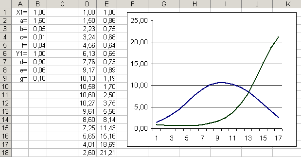

Компьютерная
модель «Жертва-хищник
с отловом».
На
основе
формальной
модели
развития
популяций жертва-хищник,
в которой
производится
отлов не
только жертв,
но и хищников,
создать
проект «Жертва-хищник
с отловом» на
языке
программирования
в
электронных
таблицах.
| Модель «Жертва-хищник с отловом» | ||
|
1
|
В
ячейки B1
и B6
внести
начальные
значения
численности
популяций
жертв и
хищников. В
ячейки B2:B5
внести
значения
коэффициентов
a, b,
c и f,
влияющих на
изменение
численности
жертв. |
|
|
2 |
В столбце D
будем
вычислять
численность
популяций в
соответствие
с моделью жертва-хищник,
а в столбце Е
- жертва-хищник
с отловом. |
|
|
3 |
В
ячейки D1
и E1
внести
значения
начальной
численности
популяций. В
ячейку D2
внести
рекуррентную
формулу
роста
численности
жертв с
отловом
=($B$2-$B$3*D1)*D1-$B$4-$B$5*D1*E1. |
|
|
4 |
Скопировать
внесенные
формулы в
ячейки
столбцов
командами [Правка-Заполнить-Вниз].
|
|
|
5 |
Для
визуализации
компьютерной
модели
построим
графики
изменения
популяций с
течением
времени. Выделить столбцы данных и построить диаграмму типа График. Появятся графики изменения численности популяций в соответствие с моделями роста численности жертв и хищников с отловом. Добавьте на график заголовок, подписи к осям и легенду для кривых. |
|
|
6 |
 |
|